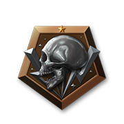
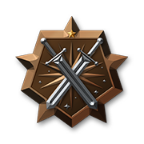
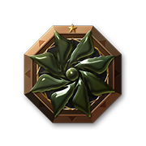
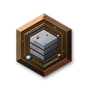
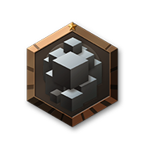
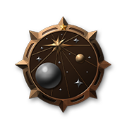

PC · console · mobile browser
Inara
Commander profile sync, commodity search, engineers, Community Goals, and squadron tools. No official native mobile app was verified; use the browser.
A field-ready manual joining fifteen disciplines — onboarding to system colonization — curated by veteran commanders, shaped by community input, and fact-checked with AI into one living reference.
2026 is a year of new ways to play.
The three-seat Vodel Rhino brings a deposit scanner, onboard refinery and deployable mining rigs. DSS now detects Planetary Mining Locations; 13 commodities join the economy. The same update adds the multi-stage Under Siege Operation.
The Anaconda Mk II launches in ARX Early Access on 20 October 2026 as a separate, SCO-compatible multirole ship. Official specifications confirm 2 small, 4 large, and 1 huge hardpoint, plus 750 t maximum cargo. Its Mk II options include Ablative Armour, an Optimised Cargo Rack for the dedicated size-6 cargo internal, and a Mining Optimised Hardpoint suited to the Mining Volley Repeater. The raised cockpit, reshaped nose, and forward-deploying large hardpoint remain part of the design.
The December crime rework adds observed, unconfirmed bounties before crimes enter a permanent record; removes the Kill Warrant Scanner; ties crime to the commander; and introduces five escalating criminal tiers. Crimes can be paid at any valid location, while the highest tiers require a Record Cleaner. Current notoriety is removed and repurposed as ship notoriety. Piracy gains direct cargo demands, and inhabited anarchy systems become criminal systems. Do not plan builds around unrevealed modules or final values until those details land.
Frontier October dev log ↗Four-player instanced missions arrived with matchmaking, private groups and Merc Coins. Rapid Response, Firestorm Rescue, Tactical Takedown, Reclamation Point and Biohazard Takedown span ship, settlement and on-foot play.
Developer deep dive ↗The medium passenger ship was released as a 0-ARX pack for every player: up to 225 passengers, Mk II cabins at 1.5× capacity, plus revived burning-station rescues and bulk evacuations.
Patch notes ↗Older foundation systems are shown because they still shape the present meta; they are dated rather than presented as new.
Specialist mining, hauling and neutron-route ships arrive. System Colonisation and Squadron upgrades continue to expand long-form group play.
Small agile fighter with vertical thrusters and a Mk II plasma cannon that fires slugs using ship fuel.
A free passenger platform lands as Operations shift to June; burning-station rescue loops return.
The first flyable vessel with an interior doubles as a rapid-deploy exobiology scout. Its Mk II Discovery Scanner detects biological signals from the cockpit.
The Rhino opens a new planetary economy and a no-rings route to mining merits.
Anaconda Mk II enters ARX Early Access on 20 October at 19,020 ARX for Standard or 38,000 ARX for Stellar, alongside the free Found Adrift Operation and ten ship rebalances. The free Law & Disorder update follows in December with its crime systems now outlined in detail.
Community builds and specialist guides converge on clear category winners, with caveats where the field is still moving.
Use the 0-ARX store pack, then deploy it from ship management. Rescue and bulk passenger missions offer a no-purchase entry path.
Even low-tier participation can bootstrap a new account; one 2026 thread cites 85M Cr for the top-100% tier. Rewards vary each week.
Core mining in an Adder or Keelback can return roughly 8M per core; nearby exobiology is another low-capital branch, with highly variable finds.
Move toward laser mining or a Type-6 → Type-7 → Type-9 trade ladder. Check route data at the time you fly; old loops expire.
Powerplay can reward the activity you already run. Choose the profit/data/bounty multiplier first, module order second.
The 2024 rebalance is still current: fixed rolls, larger high-grade material yields, up to 24 mission materials, and easier unlocks. No newer overhaul was found.
Primary tools, build hubs and active 2026 community coverage. Use live market tools for routes; use build links for loadout baselines.
Fifteen disciplines. One command deck.
Choose a discipline below, or switch to “Show all” for the complete route from first launch through points of interest, specialist careers, ship combat, carrier ownership, community tools, group play, engineering, system colonization, and deep-space fieldwork.
Anaconda Mk II and Found Adrift launch 20 October 2026. The ship enters ARX Early Access at 19,020 ARX for Standard or 38,000 ARX for Stellar, while the free Operation and ten ship rebalances arrive in the same update. Law & Disorder remains planned for December 2026.
Account setup, journal tools, rescue bookmarks, starter credits, first engineering targets, and a route into the wider guide.
Verified browser tools, PC journal apps, download links, platform notes, and the data network behind market listings.
What each career asks of you, rough community earning bands, risk discipline, and long-term colonisation work.
The verified 25% bulk-sale threshold, rare-goods distance curve, hauler ladder, Powerplay notes, and interdiction escape.
Laser, core, sub-surface, and surface mining; 2026 ships and modules; RES bonuses; engineering links; and demand-aware selling.
Outfitting, FSS and DSS procedure, heatmaps, terrain spotting, exobiology, routing, and data safety.
Wiki-verified genus maxima and clonal ranges, terrain signatures, first-logged values, and one plainly marked open question.
Forty verified Guardian sites, material farms, sightseeing landmarks, and remarkable stations — each with a one-tap system copy button.
Money loops, verified hull prices, weapon and engineering priorities, AX interceptor doctrine, and combat ranks.
Corrected September 2026 unlocks, six sourced role-build examples, component ratings, SCO, Guardian tech, and blueprint strategy.
All 13 suit and weapon engineers across the Bubble and Colonia, with referrals, unlocks, and role builds.
Honest pledge tradeoffs, merit and rank mechanics, all 12 module unlocks, territory rewards, and the strongest loops by playstyle.
Verified mission roster, Merc Coins, four-player deployment, role balance, preparation, and coordination.
Creation costs, faction influence, daily ticks, the 20 ly expansion range, conflict logic, and expansion planning.
Purchase and upkeep, all optional services, tritium and jump timing, owner controls, decommissioning, and 2026 field roles.
Claim an uninhabited system and build it station by station — an overview of CMDR Dubior's advanced guide.
A calm first route through the galaxy.
INARA covers markets, trade routes, ships, materials, Powerplay, squadrons, and engineering traders. Install Elite Dangerous Market Connector (EDMC) 5.6.0 or newer, sign in to Inara, open Settings, generate your personal Inara API key, then paste it into EDMC’s Inara settings. Inara uses a personal API key here, not an OAuth or “authorized applications” flow. EDMC can update your commander profile—including credits, cargo and materials, logs, ships, and Community Goals—while public market and exploration records can feed EDDN.
Drop into a Resource Extraction Site [Low] in a ring system and follow System Authority ships. Let them engage a pirate first; once the target is below 10% hull, land a few hits to qualify for the bounty. Save toward a Cobra Mk III as an early all-rounder.
Fit a Python with passenger cabins at Robigo Mines, then run sightseeing missions to the Sirius Atmospheric Beacon in Sothis. The guide specifies at least 30.15 ly jump range for a two-jump trip. This route is market- and mission-state sensitive; verify it before committing.
Odyssey is required. Buy an Artemis Suit, fit a Detailed Surface Scanner, map a biological world, land in the blue suitability overlay, and complete three non-clonal samples of one species before switching. Wiki-verified examples: Stratum 500m, Bacterium 500m, Tussock 200m, Aleoida 150m. The complete corrected matrix is in Exobiology.
See Exploration for the Spansh Expressway filter settings and field workflow.
Powerplay has its own chapter covering the pledge decision, current merit and rank rules, all 12 module unlocks, territory rewards, and the strongest routes by playstyle.
Loop data-courier missions between Ceos and Sothis, taking Reputation rewards toward Rear Admiral.
Loop data couriers between Ngalinn and Mainani in a small/medium-pad ship, taking Reputation rewards toward Duke.
The Guardian FSD Booster adds up to +10.5 ly. The guide’s site route is Synuefe IL-N c23-19: mount top-side point defence, activate six pylons by SRV fire, drop an Ancient Relic, then scan the orb.
Elite’s economy, faction states, mineral prices, and mission boards move. Treat the routes above as starting patterns, not permanent guarantees. The guide’s central advice stands: build capital, then play the career you actually enjoy.
Browser tools work across PC, console, and mobile browsers. Journal readers and uploaders run on a PC.
Commander profile sync, commodity search, engineers, Community Goals, and squadron tools. No official native mobile app was verified; use the browser.
Galaxy map, system, station, body, commodity, and ship search, plus commander flight logs and exploration records.
Ship builder and outfitting comparison for power, jump range, cargo, and damage. Theorycraft before buying.
Neutron, galaxy, exact, Road to Riches, trade, tourist, and fleet-carrier route plotters.
Rare-goods list, distance and sphere searches, hotspot information, and a miner tool with high-price sell stations.
Mining guides, equipment and mechanics references, and hotspot locations.
See Start for the EDMC + Inara API-key setup.
Journal history, 2D and 3D galaxy maps, expedition planning, and event overlays. It can fetch console journal data from Frontier servers when run on a PC.
Journal monitor with plugins that flag exploration and exobiology finds, predict scan values, and assist route work.
Free companion app by CMDR Grinning2001 with in-game overlays for exobiology scan tracking, ground coordinate guidance, Guardian site helpers, and colonization build tracking. A signed build is also available on the Microsoft Store.
Predicts likely exobiology species and values from journal scan data. Predictions are guidance, not confirmations.
Plans buy/sell loops and multi-hop routes under cargo, budget, supply, and demand constraints. Install from the repository documentation.
The real-time relay that moves market and system data from uploaders such as EDMC to tools including Inara and EDSM.
Choose the work before the ship.
Community earning bands are rough 2025–2026 reports, not promises. Markets, mission states, Community Goals, experience, and balance passes can move every number.
Harmless → Mostly Harmless → Novice → Competent → Expert → Master → Dangerous → Deadly → Elite → Elite I → Elite II → Elite III → Elite IV → Elite V
Penniless → Mostly Penniless → Peddler → Dealer → Merchant → Broker → Entrepreneur → Tycoon → Elite → Elite I → Elite II → Elite III → Elite IV → Elite V
Aimless → Mostly Aimless → Scout → Surveyor → Trailblazer → Pathfinder → Ranger → Pioneer → Elite → Elite I → Elite II → Elite III → Elite IV → Elite V
Helpless → Mostly Helpless → Amateur → Semi Professional → Professional → Champion → Hero → Legend → Elite → Elite I → Elite II → Elite III → Elite IV → Elite V
Defenceless → Mostly Defenceless → Rookie → Soldier → Gunslinger → Warrior → Gladiator → Deadeye → Elite → Elite I → Elite II → Elite III → Elite IV → Elite V
Directionless → Mostly Directionless → Compiler → Collector → Cataloguer → Taxonomist → Ecologist → Geneticist → Elite → Elite I → Elite II → Elite III → Elite IV → Elite V
INARA does not award a medal for reaching Elite in a game loop. In-game Pilots Federation ranks—from Harmless through Elite I–V where applicable—appear separately on INARA profiles with rank icons. INARA’s own 12 milestone medals each have five tiers and are earned from cumulative activity recorded through the Import game data journal import.
Reaching Triple Elite in Combat, Trade, and Explorer awards an in-game decal only, not an INARA medal. The multi-loop INARA award The Decorated Hero is earned by bringing 10 INARA medals to tier 5.
The engineering chapter carries six sourced 2026 examples—PvE, AX, laser mining, bulk hauling, long-range exploration, and exobiology support. They are starting points from current community consensus, not a required purchase order.
Keep enough reserve for several rebuys before flying an expensive hull. “Five rebuys” is sensible community advice, not a Pilots Federation mandate. A hauler’s shield and engineered defences are usually worth more than squeezing in the last few tonnes.
Claiming an unpopulated system costs 25,000,000 CR. The Architect then moves tens of thousands of tonnes to construct the primary starport and facilities; the source PDF’s exact 75,000-tonne claim was not verified. Treat colonisation as long-term prestige and logistics, not a fast credit engine.
Track and destroy wanted ships, then redeem bounty vouchers. Combat kills advance the in-game Combat rank.
In-game rank track: Combat
INARA:  
Take targeted kill contracts against named ships or mission targets. Qualifying ship kills advance Combat rank.
In-game rank track: Combat
INARA: The Hunter.
Interdict ships, disable them, and take cargo for black-market sale. There is no dedicated pirate rank; qualifying ship kills still feed Combat progress.
In-game rank track: Combat for qualifying ship kills
INARA: No dedicated medal; bounties or combat bonds generated still count toward The Hunter or The Soldier.
Fight Thargoid scouts and interceptors in invasion systems using specialist anti-xeno ships and weapons.
In-game rank track: Combat
INARA: 
Fly short arena matches in Close Quarter Combat. CQC has its own in-game rank track, separate from ship Combat.
In-game rank track: CQC
INARA: No dedicated medal.
Fight Odyssey ground conflict zones, raid settlements, and defend them on foot.
In-game rank track: Mercenary, separate from ship Combat
INARA: The Mercenary (surface conflicts won, high-intensity conflicts won, and settlements assaulted or defended).
Buy commodities where supply is strong and sell them where demand raises the margin. Trading profit advances Trade rank.
In-game rank track: Trade
INARA: 
Move illicit or stolen cargo past scans and sell through black markets. It has no separate Pilots Federation rank track.
In-game rank track: Trade
INARA: No dedicated medal.
Extract and refine minerals from asteroid rings or planetary deposits, then sell the haul.
In-game rank track: Trade
INARA: 
Recover wreckage, cargo, and escape pods from signal sources and wreck sites; selling recovered goods advances Trade.
In-game rank track: Trade when recovered goods are sold
INARA: The Samaritan, partially (rescued items and refugees).
Visit new systems, use the FSS and DSS, and sell cartographic data. Exploration data advances Explorer rank.
In-game rank track: Explorer
INARA: 
Perform Odyssey on-foot genetic sampling and sell completed samples to Vista Genomics.
In-game rank track: Exobiologist, separate from Explorer
INARA: The Exobiologist (organic data registered and unique species encountered).
Carry travelers, tourists, and evacuees under cabin and mission requirements. Passenger work has no dedicated rank track of its own.
In-game rank track: Trade for bulk passengers; Explorer for remote VIP sightseeing
INARA: The Captain (passengers delivered).
Move data or mission cargo between stations, often with low entry cost and no cargo-rack requirement for data jobs. Courier work has no dedicated rank track.
In-game rank track: No dedicated Pilots Federation rank
INARA: No dedicated medal.
Recover occupied escape pods and black boxes from wreck sites and signal sources, then hand them to Search & Rescue contacts.
In-game rank track: No dedicated Pilots Federation rank
INARA: The Samaritan (items and refugees rescued; settlement reboots and fires extinguished also count).
Run Odyssey covert theft, sabotage, and settlement-infiltration missions without turning every objective into a firefight.
In-game rank track: Mercenary
INARA: The Mercenary is the closest match through settlement assault and defense actions; most covert theft feeds no medal.
Claim and develop systems by hauling construction commodities and building stations and settlements.
In-game rank track: No dedicated Pilots Federation rank
INARA: No dedicated medal.
Provide player-run refuel and repair rescue in the style of the Fuel Rats and Hull Seals.
In-game rank track: None; this is community service
INARA: No dedicated medal.
Support a pledged power through territory-specific combat, trade, exploration, and logistical work. Loyalty rank is a Powerplay system, not a Pilots Federation career rank.
In-game rank track: No dedicated Pilots Federation rank
INARA: No dedicated medal.
Run missions, trade, fight, and explore to shift minor-faction influence and system states. There is no dedicated Pilots Federation rank for BGS work.
In-game rank track: No dedicated Pilots Federation rank
INARA: No dedicated medal.
Compete in community-organized ship or SRV races where route choice and handling matter more than payouts. Racing has no dedicated Pilots Federation rank.
In-game rank track: No dedicated Pilots Federation rank
INARA: No dedicated medal.
Frontier has confirmed Law & Disorder as a free December 2026 update. Crimes must be observed before they become permanent: an offence first creates an unconfirmed bounty (UCB), which lets others engage legally and brings an authority response. A UCB becomes a regular bounty when confirmed by an authority scan or on-foot radio report; escaping before confirmation clears it. Crime follows the commander, not a ship or its modules, and the Kill Warrant Scanner is being removed because normal scans will expose aggregated crimes.
The system has five escalating criminal tiers. Fines and ordinary bounties can be paid at any valid location, while the top two tiers require a Record Cleaner in a criminally controlled port. Current notoriety is removed; ship notoriety is repurposed to influence authority scans and piracy success, and a Record Cleaner can remove it.
Pirates gain a direct cargo-demand mechanic: NPCs assess ship strength, notoriety, and reputation before complying or resisting. Inhabited anarchy systems are renamed criminal systems; the anarchy label remains for uninhabited space without authority response. PvP offences retain a separate Pilot’s Federation tier system. Do not plan builds around unrevealed modules or final balance values until those details land.
Profit lives in fresh data, demand, and a disciplined hold.
Buy where goods are abundant, sell where they are scarce, and treat every displayed route as a time-stamped lead—not a guaranteed payout.
Every inhabited system runs one or more economies—Agricultural, Industrial, High-Tech, Extraction, Refining, or Service—inside Frontier’s server-based background trading simulation. Supply and demand drive prices, nearby markets can influence one another, and commanders move small economies more easily than large ones.
In-game markets react to war, famine, blockades, faction states, and heavy trading. Third-party listings only refresh when a commander running a journal uploader such as EDMarketConnector docks, so always read the timestamp. A route can be exhausted while an old listing still looks profitable.
Goods flow from economies that produce them toward economies that consume them. Industrial ↔ Agricultural and Extraction/Refining ↔ High-Tech/Industrial are classic starting pairings, but the live margin and available volume decide whether a lane is worth flying.
Boom increases the quantity a faction’s stations produce and demand, increases trade-mission offers, and makes mission payouts more generous. Bust is the opposite; Investment is a stronger Boom; Famine creates severe shortages of vital goods. During Boom, trade contributions to faction influence count double.
For Metals and Minerals, Trade Dangerous community documentation reports that price starts degrading when cargo carried at docking exceeds about 25% of station demand, then falls roughly linearly toward a station-specific floor—commonly about 30–60% of the headline price—near 80% of demand. Frontier does not officially document this rule, and commanders dispute whether the calculation keys off cargo carried or quantity sold.
These are maximum or tool-listed cargo figures, not equipped working loads. Shields, fuel scoops, limpet controllers, and other internals reduce capacity; the Panther and Type-11 figures vary notably by source and fit.
Open the Panther Clipper Mk II trade example →Run A → B → A: buy at a high-supply station, sell at a high-demand station, then return with another commodity or empty. Optimise each leg against cargo capacity, budget, supply, demand, pad size, and travel time.
Run A → B → C → … → A, carrying a profitable commodity on each leg. Inara commodity search, Spansh trade routes, and Trade Dangerous can chain legs, but every result depends on crowd-sourced market data. Check its age before flying.
Rares come from a specific market in limited per-commander allocations. Value rises with distance from origin and peaks around 200 ly; older community sources treat roughly 160 ly as near-maximum, so plan around 160–200 ly. Allocation reportedly resets about 10 minutes after your last visit, while faction state and station control can change availability.
Carrier owners set manual buy or sell orders, reserving credits and storage when a buy order is placed. Station ↔ carrier and carrier ↔ carrier arbitrage can work, but listings go stale quickly as orders fill and owners change prices. Verify the order in-game before committing.
Courier missions move data or goods station-to-station; commodity couriers allow partial completion at 50% or more. Supply missions ask you to acquire goods elsewhere and return them. Illegal-at-destination cargo is flagged as Smuggling. Team Delivery and Source-and-Return missions can be shared with up to four commanders and completed over multiple runs.
Missions pay credits plus faction reputation and Trade rank, and delivered goods can affect faction states. Timers run in real time. The wiki reports a high chance of hostile interdictions on trade and supply missions, so gather purchasable goods before accepting when practical.
Trade rank rises through commodity sales—legal or smuggled—and hauling missions. Boom-delivery, smuggling, and bulk-passenger missions also contribute. The thresholds below are community estimates; exact in-game numbers are not published and required profit can vary by activity. Community reports also say fleet-carrier commodity trades do not raise Trade rank, but that point is not officially documented.
Python and Type-8 can reach medium-pad outposts; large freighters cannot.
Check supply, demand, and the report timestamp before filling the hold.
Keep mined-goods loads comfortably under demand and retain shields rather than chasing the final tonnes.
On PC, run EDMarketConnector so your dockings refresh the community’s market data.
Four loops. One disciplined hold.
Laser, core, sub-surface, and the new September 2026 surface loop each reward a different ship, toolset, and rhythm. Prospect first; sell against fresh demand.
Fly within roughly 500 m in Analysis Mode, hold mining lasers on the rock, and let collectors feed the refinery. A fragment carries a mineral percentage; each refinery bin produces a one-ton commodity when it reaches 100%. Refineries support up to 10 bins.
Prospect every rock first: a prospector limpet reveals composition and roughly doubles fragment yield. In a pristine metallic ring, skip rocks below roughly 15% of your target. Platinum is the 2026 community favourite; Painite and Osmium are useful co-mines.
Use the Pulse Wave Analyser to find bright, fissured motherlodes, then prospect to confirm the core. Fit a Class 2 Seismic Charge Launcher and tune charges until the HUD graph sits in the blue optimal band. Overcharge and the rock can be wasted.
Charge strength is inverse to fissure strength: high charge into low-strength fissures, lighter charges into average or high-strength fissures. After detonation, use an Abrasion Blaster inside 1 km to free surface deposits. Rocky-ring minerals such as Monazite, Musgravite, and Alexandrite are community favourites; icy rings hold Void Opals.
Fit the Sub-surface Displacement Missile on a central hardpoint; Class 2 is preferred because Class 1 carries little ammunition. Strike the deposit squarely, hold the trigger while the drill advances, then release over a blue depth band in the Target Information panel. Shallow impacts ricochet and repeated misses degrade the deposit.
This loop is commonly paired with laser mining and is a standard way to extract Tritium from icy rings for fleet carriers.
The September 2026 update introduced the heavy-duty Rhino SRV, Planetary Mining Deposit Scanner, surface refinery, Mining Rig Deployment Module, and three-person multicrew. Surface-only materials include Magnesite and Rubies, among others.
The same update rebalanced mining time, yield, deposit density, efficiency recharge, and commodity percentage per unit. Surface-commodity prices were not established at research time, so early profitability claims remain an open question.
Ship fit, hotspot quality, search time, pilot skill, travel, demand, and market freshness can move every result. These reports are useful scale markers only.
The Type-11 Prospector is the first purpose-built mining ship. It has eight hardpoints—one large, two medium, and one small mining-only mount plus four weapon mounts—twelve optional internals, a dedicated fighter bay, and a unique size-5 Mk II Mining Limpet Controller that runs all limpet types from one module.
Its Type-11-only Mining Volley Repeater fires projectiles for higher laser-mining yield than ordinary lasers and can produce high-density fragments. Frontier does not state an exact multiplier. Community consensus is to run the Repeater alone; mixing it with mining lasers reduces chunk size and hurts yield.
The Torval Powerplay Mining Lance is a longer-range alternative: 8 DPS versus 2 for a standard laser, with much heavier power draw and heat.
If the yield graph is overshot, disarm a charge through Contacts; disarming takes roughly 10 seconds. Core shapes vary by ring type—there is no universal silhouette.
Night Vision helps in dark rings. Multiple collector controllers stack, and stuck fragments can be excluded through the Contacts ignore list.
No mining hardpoint or refinery has a mining blueprint. Engineer the ship around the tools: distributor endurance first, then FSD range, thrusters, power plant, shields, and lightweight support modules.
Open the Type-11 laser-mining example →Type—not position—is the rule. Mining lasers work in any ring, but the ring type determines what the rocks yield and which extraction method pays: Metallic rings are the laser-mining target for Platinum, Painite, and Osmium; Metal Rich rings hold Platinum and Painite mainly in deep cores cracked with seismic charges; Icy rings hold Low-Temperature Diamonds, Void Opals, and Tritium, with the valuable deposits mostly in cores; Rocky rings are mainly useful for engineering materials.
Check the ring type in the System Map before flying out. DSS the planet and probe its rings to reveal hotspots for your target mineral, then drop into the ring whose type matches it.
On multi-ring bodies, rings are lettered innermost-outward—A, B, C… The inner ring is usually metallic or metal rich and the outer ring usually icy, so “mine the inner ring” is a useful shortcut for Platinum laser mining, but position is only a hint. At Col 285 Sector KM-V d2-106, inner ring A yields laser-mineable Platinum; the large outer ring does not.
Within 20 km of a Resource Extraction Site, approximate laser-yield bonuses are Hazardous +100%, High +75%, normal +50%, and Low +20% (about ±3%). Work the edge rather than the centre to reduce pirate pressure.
Pirates normally scan on arrival. Drop into the ring with an empty hold so the initial scan finds nothing worth taking, then begin collection.
Use Inara’s Best Sell view, EDTools’ miner tool, or Spansh and check the report age, station demand, system state, and economy immediately before departure. Do not plan around a saved platinum price.
Keep a mined-goods sale below 25% of station demand to avoid the bulk-sale penalty. Large loads may need to be split across buyers. Boom states can lift prices, while Low-Temperature Diamond and Tritium demand can move in real time.
A carrier parked near a hotspot can buy ore through its commodity market and serve as a repair, restock, and deep-space storage base. Owners also post Tritium buy orders; community examples span roughly 78k–200k Cr/t, depending on location. These are examples, not a guaranteed market.
Scan methodically. Land defensively.
Landing convenience, handling, and hull protection matter more than a theoretical maximum jump number.
The guide proposes travelling roughly 800–1,500 ly beyond the Bubble and filtering A/F/G/K stars for first-footfall opportunities. Treat that distance as a heuristic, not a guarantee.
Approach the sunny side for better glide visibility. Slow toward minimum supercruise speed—listed as 30 km/s—and remain outside the exclusion line. In Analysis Mode, fire a central probe and place matching probes near the horizon to cover the far side.
At 100% mapping, stay in DSS view and cycle individual species filters instead of relying on “All.” Solid light teal/blue areas indicate suitable terrain, not exact organism locations. Toggle back to Combat Mode on approach to read the real landform beneath the overlay.
Select the Genetic Sampler, hold primary fire on a target, then travel far enough for a genetically distinct sample. The guide states green pulse = accepted distance and blue = too close. Finish all three scans before touching another species or the active sample is erased.
In Expressway to Exomastery, enter source system and unladen range, then use the guide’s 2,000 ls arrival and 10M CR minimum value filters. Pair the route with Elite Observatory and BioInsights for journal-driven species predictions during FSS work.
For canopy searches, the guide suggests inverted flight 30–50m above ground at under 50m/s. An SRV external camera positioned about 15m up can scout behind dunes. Bacterium reads as flat sheen, Fungoida favours jagged slopes, Stratum favours smooth plains.
At the cited high loyalty rank, Pranav Antal adds +30% organic-data profit when handed in at eligible control hubs. The guide’s worked example turns a 95M CR Stratum find into about 123.5M CR. Verify current Powerplay conditions before planning around it.
Unsold exploration and Vista Genomics data is lost on destruction. Keep shields powered for planetary work, avoid careless high-gravity approaches and exclusion-zone drops, and cash in periodically at secure ports or suitable fleet carriers.
Know what grows where.
Fifteen wiki-listed genera, corrected clonal ranges, and the highest verified base value in each genus. Radicoida remains a plainly marked open question.
Install Elite Observatory Core and BioInsights, then run the monitor during FSS work. BioInsights combines journal and body parameters to predict likely organisms and can track Artemis sampling distance. Predictions are leads, not certainty: confirm the organism through the DSS filter and surface scan.
Tectonicas is the verified genus maximum. Flat sedimentary basins, plains, and dunes; bright flush mats.
Segmentatus is the verified genus maximum. Layered mineral cones on flats and volcanic ground.
Stigmasis is the verified genus maximum. Wire-like growths across dusty hills and dunes.
Biconcavis is the verified genus maximum. Coiled shell forms in canyons, ravines, and hill bases.
Vermis is the verified genus maximum. Ribbed or thorny columns on sand, silt, and coarse ground.
Deltahedronix is the verified genus maximum. Interlocking geode-like clusters on broken rocky terrain.
Speculumi is the verified genus maximum. Circular plate forms around basins and tectonic lines.
Gravis is the verified genus maximum. Aloe-like leaf clusters on sedimentary flats and sand.
Discus is the verified genus maximum. Rigid, petrified ribs on steep rocky terrain.
Cavas is the verified genus maximum. Hollow upright tubes in sedimentary fields and broad valleys.
Flammasis is the verified genus maximum. Camouflaged thorny briars on mountain slopes and rocky valleys.
Nebulus is the verified genus maximum; many common finds are nearer 1M. Look for flat, glossy stains.
Nitris is the verified genus maximum. Venting mineral chimneys near fractures and geyser fields.
Pluma / Radialem share the verified genus maximum. Glowing geometric webs on plateaus or polar rock.
Bullarum is the verified genus maximum. Thin capped stalks around high ranges and cliff faces.
The checked wiki matrix did not list this genus, while 2026 narrative coverage mentioned “Radicoida unica.” The supplied 15.5M/500m claims are therefore not asserted here.
Each card shows the highest verified base value in that genus, its approximate first-logged total, and the clonal range. First-logged pays 5× total: base payout plus a 4× bonus. For example, 19,010,800 becomes about 95.1M. Confirm the Vista Genomics result in game before final planning.
Forty reasons to plot a course.
Guardian history, proven material stops, landmark journeys, and unusual stations. Copy a system name, paste it into the Galaxy Map, then use the listed body, site, or local navigation note.
The classic module-blueprint farm for the Guardian FSD Booster, reinforcement modules, power plant, and distributor. Charge six pylons, drop an Ancient Relic, then scan the terminal; expect more sentinels than at quieter sites. About 871 ly from Sol.
The closest module-blueprint site to the Bubble in the wiki distance table, at roughly 662 ly from Sol: the shortest of these trips for an FSD Booster unlock.
A go-to weapon-blueprint site for Gauss cannons, shard cannons, and plasma chargers. The terrain is relatively flat, larger ships can land nearby, and four obelisks are scannable.
An alternate weapon-blueprint structure when the more familiar Synuefe site is crowded.
Yields Guardian vessel blueprint segments for fighter unlocks. Its route begins at the Guardian Beacon in Synuefe IT-F d12-5, planet A 2.
A vessel-blueprint site requiring an Ancient Key; the terminal can be defended by up to 12 sentinels. It is paired with the first Guardian Beacon found.
Verify in-game: the wiki prints “Long 37.80, Lat −111.61,” an impossible latitude, so the fields appear reversed.
The first Guardian Beacon discovered, in August 3304. Activating it provides exact coordinates to its paired large Guardian Structure for vessel blueprints.
The first Guardian ruins discovered by humanity on 27 October 3302, where Ram Tah’s decoding of Guardian history began.
The two coordinate pairs differ only slightly; either should place a navigator within visual range.
A Ram Tah mission ruin plus a widely used encoded-data stop, making the system useful for both lore scans and a module blueprint run.
The second pair is community-listed rather than established by the cited wiki entry; verify the target cluster in-game.
A module-blueprint pilgrimage at roughly 1,010 ly from Sol, notorious for steep, high-altitude SRV terrain. Only ships up to roughly Diamondback size can land close by.
Site #6 of the original Ram Tah ruin survey, found in February 3303 and representative of the Guardian heartland’s primary-zone ruins.
The classic G1–G4 manufactured-material circuit around a derelict mining settlement, with some encoded data and the logs of a deadly 3286 cave-in.
The first Anaconda wreck discovered. Shoot its cargo racks for high-grade raw materials, but approach carefully: the terrain can trap an SRV.
A flat, easy wreck yielding Ruthenium, Tungsten, Antimony, Zirconium, and Tellurium, plus valuable salvage. The trade-off is a roughly 90,000 ls supercruise.
The pairs are about 0.02° apart and should both put the wreck within visual range.
The standard encoded-data circuit: scan nine red beacons around CMDR Jameson’s wreck, then relog and repeat.
A fast combined farm: three cargo racks for G4 raw materials and three comms beacons for G4/G5 data per relog cycle. Keep clear of the site’s visitor.
Verify in-game: the reported longitudes differ by about 0.36°. Use the “The Bug Killer” nav marker after DSS if available.
The famous shard-forest system about 1,500+ ly out: Polonium on C 1 a, Ruthenium on C 1 d, Tellurium on C 3 b, and Technetium on C 5 a. DSS the body, filter for shards, then collect.
C 3 b also has a documented cluster at −17.6769, −55.1800 that may not reliably respawn on relog; use the DSS heat map to find fresh clusters.
Pair this with HIP 36601 to fill every G4 raw material except Selenium: Yttrium on B 5 a, Antimony on B 5 c, and Ruthenium on B 7 b.
An alternate Antimony shard site if the better-known Outotz LS-K d8-3 location has been harvested.
A community-listed Selenium source. Selenium has no crystalline-shard site, so geological clusters are the usual alternative.
Index-only community listing; no primary wiki page with an editorial history confirmed this pair.
A second community-recommended Selenium farming cluster.
Index-only community listing; verify the geological sites in-game.
The explorer’s central pilgrimage: the Milky Way’s supermassive black hole and its dramatic gravitational lensing, roughly 25,900 ly from Sol.
Humanity’s far-frontier colony region, about 22,000 ly from Sol and a natural staging point for the galactic core or Beagle Point.
The crown-jewel expedition target near the edge of the explorable galaxy, roughly 65,279 ly from Sol, and the destination Jaques Station famously failed to reach.
The real 1977 NASA probes, still carrying their Golden Records. Find them via FSS; the system also includes the “Voyager” and “Cradle of Humanity” tourist beacons.
Two black holes, a ringed M-class star, a ringed white dwarf, and a ringed neutron star in one system: one of the galaxy’s densest concentrations of spectacle.
The first missing generation ship found, in April 3303. Its logs tell how an alien microorganism killed 22,000 passengers.
A deeply unsettling generation-ship visit, known for its voice-acted horror story told through recovered logs.
One of the most visited generation ships and a practical first trip at roughly 122 ly from Sol.
The first Thargoid surface structure found, in June 3303, with the alien star-map chamber that helped launch the modern Thargoid story arc.
Verify in-game: the source warns that some planetary POIs moved after Odyssey and some listed sites may be inactive.
The first Thargoid barnacle found, in January 3302: the Pleiades’ spiky meta-alloy “trees.”
Home to one of the game’s best-known canyon networks and Tourist Beacon 0073, a favorite destination for stunt flying.
A moon that races around its planet in under two minutes at roughly 870 km/s: a surreal sight and a legendary landing challenge.
The only station with engines, stranded mid-jump to Beagle Point after Thargoid-sensor interference and run by a centuries-old cyborg bartender. It sells Jaques Quinentian Still.
Built by Distant Worlds II as a rest stop at the galaxy’s heart; at roughly 25,900 ly from Sol, it is the closest station to Sagittarius A* and a staging point toward Beagle Point.
Use d7561. A secondary article’s d7651 spelling conflicts with both the wiki and EDSM.
Dock inside a hollowed asteroid in the Lagoon Nebula and look back out through the slot at the nebula.
An asteroid base with California Nebula vistas, pairing a deep-space dock with one of the region’s best views.
A full-service asteroid base with outfitting, shipyard, and black market: a surprisingly practical home carved into a rock.
One of the few neutron stars near civilization: a striking jet-cone view and a practical place to learn FSD supercharging close to home.
Visit one of the largest known stars represented in the galaxy: a bloated red hypergiant that dwarfs the ordinary suns along the route.
This library was verified from current web sources, not inside a live game client. Use a Detailed Surface Scanner and the navigation panel where coordinates are absent. Recheck every amber caveat in-game, especially moved Odyssey POIs and conflicting coordinate pairs.
Engineer for the fight you intend to finish.
Human PvE and anti-xeno combat reward different loadouts, but both punish weak power, heat, distributor, and defensive planning. Serious opposition assumes an engineered ship.
Pirate hunting in Extraction-economy RES is the standard early-to-mid combat route. Community reports range from 20–50M Cr/hr in low RES to 150–250M Cr/hr in hazardous RES for experienced pilots; spawn luck and ship capability matter.
Redeem bounty vouchers at a station or carrier Redemption Office. Power bonuses—for example Archon Delaine in eligible space—can raise voucher value by up to 100%.
Source: community commander streams and build guides; rates are estimates.
War-state CZs award a combat-bond voucher per kill after you choose a side. Community estimates place them around 50–120M Cr/hr, depending on intensity and massacre-mission rewards. Low, medium, and high intensity scale enemy engineering and lethality.
Source: community combat reports; rates are estimates.
Community routes stack pirate-massacre missions from several issuing minor factions against the same target faction; one kill can then advance one mission per issuer. Missions from the same issuer advance serially, and pirate-lord assassinations have individual targets rather than sharing the massacre counter.
A pirate lord carries a 300,000 Cr destruction bounty plus the mission reward; high-reputation missions are reported at 40–50M Cr each. Fast, optimised routes are reported at 200–300M Cr/hr, but neither mission availability nor income is guaranteed.
Source: community commander streams and mission guides.
These high-threat signal sources produce waves of engineered pirates. No reliable hourly-payout figure was verified in this research pass, so treat the activity as a high-end combat test rather than a quoted credit engine.
Source: community reports; payout remains an open question.
The Anaconda Mk II enters ARX Early Access on 20 October 2026. The Standard package remains 19,020 ARX and the Stellar package 38,000 ARX. This is a separate ship: buying an Anaconda will not turn it into a Mk II.
Official specifications list 2 small, 4 large, and 1 huge hardpoint, plus 750 t maximum cargo. Its Mk II options include Ablative Armour, an Optimised Cargo Rack in the dedicated size-6 cargo internal, and a Mining Optimised Hardpoint suited to the Mining Volley Repeater. The SCO-compatible design retains its raised cockpit, reshaped nose, and forward-deploying large hardpoint.
Ten ships receive changes with the 20 October update. Full numerical stats arrive on Frontier’s equipment page with the update, and this guide will be refreshed after they land.
All eight hull prices above were live-checked against the Elite Dangerous Wiki ship table on 26 September 2026. Roles are community meta judgments: medium ships dominate general PvE on agility and cost; Corvette, Cutter, and Anaconda excel in CZ and RES endurance, often with fighter support.
The common PvE pattern is thermal damage for shields and kinetic damage for hull: Efficient beam lasers paired with Overcharged multicannons. Community builds also use frag or Pacifier burst setups, while plasma accelerators reward experienced fixed-weapon aim.
While active, this multicannon experimental makes the target take +25% hull damage from all sources and adds +20 armour piercing. It does not stack on one target, so fit one applicator; ammo capacity falls 20%.
Source: Elite Dangerous Wiki, live-checked 26 September 2026.
For beam lasers and plasma accelerators, damage scales while ship heat runs from 90% to 150%, capped at 160% of base damage—a +60% bonus—at 150% heat. The reward is substantial; so is the thermal risk.
Source: Elite Dangerous Wiki, live-checked 26 September 2026.
Source: current community build consensus. Engineer locations and unlocks are in Ship Engineering.
Open the Python Mk II PvE example →The main Thargoid war ended in December 2024 when Titan Cocijo was destroyed in Sol. Interceptors, Scouts, Incursion events, and AX specialist play persist. No verified 2026 AX balance change was found in this pass, so the doctrine below is AXI community practice, not a Frontier-authored meta.
Source: Frontier GalNet, “Titan Cocijo Destroyed, Sol Liberated”; AXI Basic Combat Guide.
The Class 2 unlock costs 1 Guardian Weapon Blueprint Fragment, 18 Guardian Power Cells, 20 Guardian Technology Components, 15 Manganese, and 6 Magnetic Emitter Coils. The weapon has long range with damage falloff. Ships have a default limit of 4 experimental weapons; compatible Experimental Weapon Stabilisers can raise that ceiling.
Source: Elite Dangerous Wiki, live-checked 26 September 2026.
Attack below 20% heat to evade interceptor main-cannon tracking; carry heatsinks. Thargoid fire deals phasing damage that partially bypasses shields. Caustic sinks counter caustic damage, while remote-release flak clears the Thargon swarm out to roughly 7 km; one swarm can be banked at a time.
Source: AXI Basic Combat Guide, updated December 2025.
Drop the shield, deal hull damage to exert a heart, destroy it, then wait out the shield phase before exerting the next. Finish the next heart before roughly the 6-minute mark—7 minutes for Basilisk or Medusa, 8 minutes for Hydra—or the interceptor enrages and the fight is effectively lost.
Source: AXI Basic Combat Guide; timings and hit counts are community doctrine.
Human weapons can hurt Scouts. Interceptors are effectively immune to conventional damage, so use Guardian or AX weapons. Current-generation tools also include Guardian nanite-torpedo pylons and enhanced AX weapons.
Carry heatsinks, flak, and gauss reloads. Build for module survival and repair, then learn one interceptor class at a time; AX balance and encounter availability can move after this snapshot.
Open the AX Chieftain example →Combat experience depends on the destroyed target’s rank relative to your own. Beyond Elite are Elite I–V prestige ranks. Reaching Elite in combat contributes toward access to Shinrarta Dezhra and Jameson Memorial.
Verification note: this rank sequence, prestige ladder, and permit relationship are long-standing references but were not live-rechecked in this research pass.
Build the ship before you spend the materials.
Engineer unlock registry: every ship engineer in Live and Odyssey, what each one requires to unlock, and the components, Guardian tech, blueprints, and tool notes involved.
These are sourced 2026 community-consensus suggestions—not requirements, not a progression order, and not the only viable ships. Open a role to see the defining modules, engineering pattern, source build, and any contested or unverified points.
The 2026 community preference combines medium-ship agility with near-large-ship firepower. This example uses the live-verified EDSY frag build; a thermal-vent beam variant is also sourced for cooler running and easier work against small targets.
Contested: Federal Corvette remains the tankier Haz-RES farmer; Krait Mk II and Alliance Chieftain remain accepted alternatives. Python Mk II is favoured for DPS-per-credit and agility, not universal supremacy. The separately purchased Anaconda Mk II enters ARX Early Access on 20 October; its official slot, hardpoint, and cargo specifications are now published, but combat performance still needs live testing.
AXI describes the shieldless Chieftain as the established learning and all-skill-level AX meta. The defining loop is fast shieldless cold orbiting rather than conventional shield-tank combat.
Verification limit: the per-module blueprint grades encoded in the linked EDSY build were not decoded in the research pass. The engineering above is long-standing AXI standard, not a fresh 2026 per-slot verification. Corsair, Krait Mk II, and Challenger are also accepted alternatives.
The Type-11’s exclusive Mining Volley Repeater and dedicated size-5 Mk II Mining Multi-Limpet slot make it the 2026 fragments-per-hour favourite while preserving a useful working hold.
Contested: the Imperial Cutter remains the mapped Haz-RES and sheer-tonnage alternative. The Type-11 leads on repeater yield and collector count; the Cutter leads on tonnes per trip.
For colonisation and Community Goal bulk work, the Panther Clipper Mk II is the capacity leader. Its enormous hold can be excessive for ordinary mission hauling, where medium-pad access or safer handling may matter more.
Community-sourced limits: the 1,238/1,304 t capacities and roughly 25–30 ly laden estimate were not tied to one canonical build. Type-8 remains the medium-pad option; Cutter remains the faster, safer large hauler under threat.
The Mandalay is the community-consensus long-range explorer: 80–90 ly is achievable with a pre-engineered FSD while retaining SCO stability and a compact landing footprint.
Contested: Anaconda still wins absolute range but handles and lands poorly; Asp Explorer is cheaper with a strong cockpit view; Caspian Explorer adds 2026 neutron-route strengths but does not out-jump the Mandalay.
The Nomad-based mothership loop is the 2026 support-ship option for serious exobiology from a larger explorer: cockpit bio-signal detection, a tiny skid footprint, and deployment where the mothership cannot land.
Contested by workflow: Mandalay or Cobra Mk V is often better for lightweight direct surface landings. The Nomad mothership wins when a large-ship explorer values deployable access; it is not the one answer for every exobiologist.
For referral engineers, the guide says to reach Grade 3 plus roughly one-third toward Grade 4 with the prerequisite. A referral is not the unlock. Where bond totals vary, use the exact value shown in your in-game invitation.
G5 FSD/DSS · G3 Thrusters/Sensors
Scout rank; donate 1 Meta-Alloy.
G5 FSD · G3 Shields/Thrusters
Travel 300 ly from career start; donate 3 Soontill Relics.
G5 Power Distributor · G4 Pulse · G3 Beam/Burst
Sell at 5 unique Black Markets; pay 500,000 CR.
G5 Multi-Cannon/Rail · G3 Fragment · G2 Cannon
Earn more than 15 bounty vouchers; hand in 100,000 CR of vouchers.
G5 Missile/Torpedo · G1 Armour Reinforcement
Cordial with Eurybia Blue Mafia; donate 200 Landmines.
G5 Sensors/DSS
Referral: Felicity; claim 50+ Federal combat bonds; hand in the invitation value, reported as 100k or 1M CR.
G5 Shield Generator/DSS · G3 Shield Booster
Referral: Dweller; trade at 50 unique markets; donate 200 Gold.
G4 Power Plant · G3 Power Distributor
Referral: Elvira; Sirius permit; donate 25 Modular Terminals.
G5 Thrusters · G3 FSD
Referral: Marco; reach 5,000 ly maximum distance; donate 25 Sensor Fragments.
G5 Thrusters · G3 FSD
Referral: Marco; reach 5,000 ly maximum distance; donate 25 Sensor Fragments.
G5 Fragment · G2 Multi-Cannon
Referral: Elvira; Friendly with Party of Yoru + invitation; donate 25 Xihe Biomorphic Companions.
G5 Sensors/Life Support/Fuel Scoop
Referral: Marco; Dangerous rank + Founders World permit; donate 25 Kongga Ale.
G5 Hull Reinforcement/Armour
Referral: Tod; mine and refine 500t; donate 10 Painite.
G5 Plasma Accelerator · G3 Sensors/Life Support
Referral: Selene; Friendly with Alliance + Alioth permit; donate 50 Bromellite.
G5 Shield Booster · G3 Shield Generator
Referral: Selene; Merchant rank; donate 50 Lavian Brandy.
G5 Power Plant/DSS
Referral: Liz; Imperial Outsider; donate 50 Kamitra Cigars.
G5 Beam/Pulse/Burst Lasers
Referral: Hera; Competent rank; donate 50 Fujin Tea.
G5 Limpet Controllers/Scanners
Referral: Hera; Friendly with Empire + Achenar permit/Squire; provide 50 Decoded Emission Data.
G5 Chaff/Heat Sink/Point Defence
Referral: Lei; Surveyor rank; provide 50 Classified Scan Databanks.
G5 Beam · G4 Sensors · G3 Shield Generator
Referral: Juri; Friendly with Federation + Sol permit/Petty Officer; hand in invitation value, reported as 1M or 10M CR.
G5 Hull Reinforcement/Armour
Referral: Juri; Federal Midshipman; provide 50 Aberrant Shield Pattern Analysis.
G5 Plasma Accelerator, Power Plant, Power Distributor, Sensors, DSS, Life Support, scanners, Rail Gun
Referral: Liz Ryder. Meet: Trade rank Dealer or higher. Unlock: donate 25 Occupied Escape Pods.
G5 FSD, Thrusters, Shield Generator, lasers, FSD Interdictor, Shield Booster · G4 Shield Cell Bank
Referral: Elvira Martuuk. Meet: obtain the Colonia Council invitation. Unlock: hand in 100,000 CR in bounty vouchers.
Cannons, Multi-Cannons, Refinery, Fuel Scoop, limpet controllers
Referral: The Dweller at grade 3–4. Meet: Surveyor exploration rank or higher. Unlock: provide 10 units of mined Osmium.
Armour, reinforcement, defences, AFMU, mines, missiles, torpedoes
Referral: Tod “The Blaster” McQuinn at grade 3–4. Meet: Expert combat rank or higher. Unlock: provide 200 units of Progenitor Cells.
SCO FSDs shorten long in-system travel but consume fuel and create severe heat. Compare exact class/rating in your build planner. Fit a heat sink if needed, use short bursts, and stop before heat or fuel becomes unsafe.
See Start for the Guardian FSD Booster unlock route and maximum range boost. The older guide also names Guardian Gauss Cannons as a core AX heart-sniping weapon.
Dirty Thrusters + Drag Drives is the cited combat-agility pattern; Increased Range FSD + Mass Manager is the cited long-range pattern. Pin one blueprint per engineer for remote grade work; Experimental Effects still require visiting a suitable workshop.
Use INARA for material inventory, shopping lists, and Material Traders; Coriolis or EDSY for mass, power, heat, shield, and distributor testing; and ED Odyssey Materials Helper for journal-driven recipe and settlement tracking. Engineering can make a nominally valid build unflyable if heat, mass, power draw, or distributor demand is ignored.
Engineer the role, not the inventory.
Suit and weapon upgrades are a separate system: 13 engineers, three Bubble chains, four Colonia specialists, and no remote pinning.
This free Operation for up to four commanders sends a squad into a long-missing megaship that has returned without communications. The mission moves through fire- and debris-filled wreckage toward a valuable asset while a rival group tries to seize the same prize. The objectives are to reach the vault, defeat the opposition, recover the goods, and extract.
First upgrade the suit or weapon through its normal equipment grades; then an Odyssey engineer installs individual modifications in available slots. There is no ship-style G1–G5 engineer reputation ladder, no remote blueprint pinning, and no Experimental Effect slot. Finalise the item’s role before spending rare materials.
Every premium suit costs 150,000 CR at Pioneer Supplies at Grade 1. The free Flight Suit cannot be upgraded or engineered. Grades raise shield strength, regeneration, resistances, and available modification slots: 0 / 1 / 2 / 3 / 4 slots from G1 through G5.
Each grade also requires Suit Schematics, Health Monitors, and Manufacturing Instructions.
These are current-meta suggestions, not required paths or the only viable loadouts. Community judgments are marked separately from game and wiki facts.
A combat-first G5 fit that strengthens shield recovery and resistance, extends ammunition, and uses the fourth slot for mobility. Treat it as a proven starting point rather than a mandatory end state.
Community meta: “Double rockets is easy mode” is a player-consensus judgment, not a required build. Tap weapon-swap once to alternate primaries; double-tap to draw the sidearm.
This fit prioritises undetected movement, fast identity scans, and carrying more settlement materials. It is a flexible stealth-and-salvage template, not a required path.
Community meta: Quieter Footsteps is the near-universal stealth pick. Extra Backpack Capacity expands goods, assets, and data storage—not grenades, medkits, energy cells, or other consumables.
This “fieldwork comfort” build reduces interruptions while crossing rough terrain and taking widely spaced samples. It is optional; an unengineered Artemis remains viable.
Community meta: many exobiologists carry light or no weapons and keep the SRV nearby; some do not engineer the Artemis at all. This is a comfort build, not a requirement.
Community-meta traps: Reduced Tool Battery Consumption does nothing useful on a Dominator because it has no role tool; Added Melee Damage (+150% melee) is ineffective against shields; Night Vision drains the battery, so pair it with Improved Battery Capacity when endurance matters.
Complete 10 Surface Conflict Zones. Deliver 5 Settlement Defence Plans to reveal Wellington.
Suit: Sprint, Jump, Air · Weapon: Handling, Noise Suppressor
Referral: Hero. Sell a combined 15 Multimedia, Classic, and/or Cat Media. Deliver 5 Insight Entertainment Suites to reveal Uma.
Suit: Backpack, Battery, Tool Efficiency · Weapon: Range, Scope
Referral: Wellington. Reach Unfriendly or lower with Sirius Corporation.
Suit: Resistance, Shield Regen · Weapon: Headshot, Reload, Stowed Reload
Complete 10 Restore/Reactivation missions. Deliver 5 Genetic Repair Meds to reveal Terra.
Suit: Melee, Resistance · Weapon: Ammo, Magazine, Reload
Referral: Jude. Complete a combined 6 Covert Theft/Heist missions. Deliver 15 Financial Projections to reveal Oden.
Suit: Combat Movement, Air, Sprint · Weapon: Hip Fire, Noise Suppressor
Referral: Terra. Sell a combined 20 Biological Samples, Employee Genetic Data, and/or Genetic Research.
Suit: Tracking, Battery, Night Vision · Weapon: Scope, Stability
Travel 100 ly in Apex shuttles; own-ship travel does not count. Deliver 5 Push to reveal Kit.
Suit: Backpack, Tool Efficiency, Tracking · Weapon: Range, Stability
Referral: Domino. Sell 5 Opinion Polls. Deliver 5 Surveillance Equipment to reveal Yarden.
Suit: Melee, Ammo, Shield Regen · Weapon: Magazine, Stowed Reload
Referral: Kit. Sell 5 Smear Campaign Plans.
Suit: Combat Movement, Jump, Quiet Steps · Weapon: Audio Masking, Handling, Hip Fire
Friendly with Colonia Council; deliver 10 Faction Associates toward Yi Shen.
Suit: Jump, Air, Sprint, Combat Movement · Weapon: Noise Suppressor, Hip Fire, Handling
Visit 5 settlements in Colonia; deliver 10 Digital Designs toward Yi Shen.
Suit: Melee, Resistance, Ammo, Shield Regen · Weapon: Magazine, Reload, Stowed Reload
Sell a combined 10 Culinary and/or Cocktail Recipes in Colonia; deliver 10 Manufacturing Instructions toward Yi Shen.
Suit: Backpack, Tracking, Tool Efficiency, Battery · Weapon: Range, Scope, Stability
Complete all three preceding referral deliveries; no separate fourth item is listed.
Suit: Quiet Steps, Night Vision · Weapon: Audio Masking, Headshot
Odyssey goods live in backpack inventory and bartender markets, not normal cargo. Domino’s 5 Push reveals Kit; Kit then needs 5 Opinion Polls sold. Track each stage before trading away uncommon goods.
Artemis: exploration/exobiology. Maverick: access, looting, tool endurance. Dominator: combat. Buy promising pre-upgraded gear when found, but confirm grade and remaining mod slots before engineering it.
Do not sell or discard unlock goods before the relevant access task is complete. Carry e-breaches, power regulators, energy cells, and medkits for settlement work, while checking mission legality and local security state.
Pledge for the activity you already enjoy.
Powerplay is a long-term loyalty layer, not a salary. It can amplify ordinary play, unlock all 12 power modules, and give political work meaning—but the first module alone costs 247,000 merits.
The honest answer depends on whether the perks and module path improve what you already fly.
Pledge when a territory perk, signature module, or organised campaign already fits your normal loop. Do not treat Powerplay as a competitive credits-per-hour career.
Right activity, right system, permanent loyalty progress.
Open the ship's right-hand panel, choose the Powerplay tab, and pledge to one of 12 powers. Only one pledge can be active at a time.
Finish the five weekly assignments to enter rank 1. These introduce qualifying activities before normal merit progression begins.
Acquisition targets uncontrolled systems; Reinforcement develops or defends your power's systems; Undermining weakens enemy systems.
Qualifying actions award cumulative merits and also move the local control score. Merits have no decay, expiry, or effort cap. Official
Acquisition progresses Uncontrolled → Expansion → Contested. Controlled space progresses Exploited → Fortified → Stronghold; Fortified systems support expansion within 20 ly and Strongholds within 30 ly. A system changes at most one state per cycle. Control scores decay nonlinearly toward a 25% floor, but decay alone never drops a state; active undermining is required.
The exact Powerplay 2.0 weekly tick day and time was not verified in the researched sources.
Since the July 2025 update, reinforcement merits vary dynamically from −20% to +30%; undermining receives a static +15%; acquisition is 0%. Community wiki
The often-cited ~+50% ethos bonus is a community estimate, not an official figure. Trade and mining merits appear to scale with profit margin, with a roughly 40% threshold also treated as a community estimate.
Leaving a power resets all loyalty rank, perks, and merit progress. Frontier describes that reset as the only defection penalty in Powerplay 2.0: there is no defection cooldown. Modules already bought, fitted, or stored remain yours.
Every power can unlock every power module.
Your first unlock follows the power's signature module; later modules arrive in that power's own order.
The pool is Prismatic Shield Generator, Cytoscrambler, Pack-Hound Missile Rack, Enforcer Cannon, Imperial Hammer, Pacifier Frag-Cannon, Concord Cannon, Advanced Plasma Accelerator, Mining Lance, Pulse Disruptor, Retributor, and Containment Missile.
The signature module unlocks at rank 34 / 247,000 merits. Further modules unlock at ranks 39, 44, 50, 57, 63, 70, 76, 83, 88, 91, and 97. The Powerplay 1.0 four-week wait is gone.
Once unlocked, the Elite Dangerous Wiki says every class and rating variant can be bought at any station with Outfitting, not only in your power's territory.
The wiki also says purchase access remains regardless of later pledge. Frontier explicitly confirms that modules already bought, fitted, or stored are kept, but has not explicitly confirmed purchase access after a rank reset. One player bug report suggested access may be checked against current rank, so stock important modules before switching.
Care packages contain engineering materials plus credits. Since the roughly November 2025 change, they expire after 30 days and auto-open. Excess materials convert to credits at 2k / 4k / 8k / 16k / 32k per G1–G5 material.
Rebuy protection reaches 100% at rank 36 when destroyed in your power's territory and at rank 60 when destroyed by an opposing power ship. The rank schedule also includes power decals.
Powerplay has no salary. Community sources report end-of-cycle leaderboard credit awards and top-commander portraits, but the payout amounts are undocumented. Treat the credits as unverified, not as a planning figure.
Choose the loop first, then the power.
Match territory economics and the first signature-module unlock to the work you already enjoy.
Mine and sell in the same system for reinforcement. Edmund Mahon and Felicia Winters also have mining as an ethos activity. The Rhino expands where surface mining is possible, but merit parity with space-mined goods is not confirmed by Frontier.
Community consensus: the merit meta. For reinforcement, mine and sell in the same friendly system. For acquisition, mine in a supporting system and sell in the target. Mining-ethos choices are Edmund Mahon, Felicia Winters, Nakato Kaine, and Zemina Torval.
The September 2026 Rhino SRV is described by the community as a surface-merit-mining breakthrough because it removes the need for rings; Frontier has not confirmed parity with space-mined commodities.
Use Powerplay conflict zones, power-ship kills, and bounty hunting. Power ships reportedly return about 36–81 merits each; that is a community estimate, not a guarantee. Arissa Lavigny-Duval, Denton Patreus, Jerome Archer, and Yuri Grom have combat-aligned ethos activities.
Community reports describe trade merits as mostly dead after the rebalance. Ordinary sales need roughly 40% profit margin to qualify—an estimate—while rare-goods sales and high-end cargo donation missions are the useful exceptions.
In Li Yong-Rui reinforcement space, hand high-value bodies—Earth-like, Water, and Ammonia worlds—to Universal Cartographics one at a time. The reported rate of about 12,000 merits/hour is a community claim, not an official rate.
The Elite Dangerous Wiki documented the commodities required to support Antal’s Powerplay ethos on 29 September 2026. Collect them from the indicated friendly system and deliver them to the matching target type.
On-foot power-data merits were disabled after an exploit and were not verified as restored; escape-pod merits remain suspended. Check the current patch state before building a route around either activity.
Four commanders. One staged objective.
Operations launched 30 June 2026 with Update 4.4.0.0. They are instanced, multi-stage, four-player co-op missions available through matchmaking or private groups. Rewards use the dedicated Merc Coins currency.
Bring damage dealers, a support or repair ship, and—where settlement stages demand it—an on-foot-ready commander with an engineered suit. Against mixed wings, thermal/kinetic balance matters more than a single raw-DPS number. The PvE example is a useful space-combat baseline, not an Operations-specific prescription.
Open the PvE combat example →Agree roles before deployment. Voice comms, focus fire, and a defined retreat/regroup point beat four independent pushes. Stock repair and rearm, check notoriety and jurisdiction, and keep rebuy covered.
Inara's corresponding board is Squadron Operations, a per-squadron page where active squadron missions are grouped under Missions and Other Missions, with Logistics, Combat, Colonisation, Exploration, Political, and Social categories.
Operations are multi-phase co-op scenarios for up to four commanders, blending ship combat with on-foot objectives such as megaship interiors. Difficulty rises across the roster, and teams are tuned around distinct roles and loadouts. Higher difficulties demand higher-level gear: engineered suits and weapons on foot, and engineered ships in space. Go in with stock or low-grade equipment and you will get killed.
Engineer the whole loadout before attempting harder Operations: use On-Foot Engineering for suits and weapons, and Ship Engineering for the space stages.
Merc Coin is earned by successfully completing Operations and through weekly bonuses. Spend it on MercGear: ship modules and engineering blueprints, including pre-engineered hardpoints, core modules, and internal modules. Merc Coins cannot be bought with ARX.
Reward amount and quality scale with Operation difficulty, so harder Operations pay more.
MercGear adds special versions of otherwise normal parts: pre-engineered modules and exclusive blueprints bought with Merc Coins. It complements rather than replaces the standard engineer grind.
Build the standard foundation in Ship Engineering and On-Foot Engineering, then use MercGear to extend it.
A squadron is a group. A faction is a system actor.
Keep player organisation, in-game minor factions, Background Simulation influence, and system colonisation as four distinct systems.
The first squadron a commander creates costs 1,000,000 CR; each additional squadron costs 10,000,000 CR. Names and four-character tags are immutable. Squadrons support up to 500 members across customisable ranks.
Source note: Elite Dangerous Wiki, updated 6 October 2026. Frontier has not confirmed the revised fee in an official announcement.
Add an existing in-game squadron at Inara’s Create New Squadron page. The required record includes squadron name, platform, in-game name, and squadron ID. For a PC squadron, Inara can automatically associate imported game data when the name, tag, platform, and verified Inara owner match the in-game owner; this depends on imported data and may take up to 24 hours.
A squadron is not a minor faction. Inara links a related minor faction from the squadron’s detail page rather than registering it separately. A squadron may support a faction without being that faction.
Conflicts arise when two factions reach similar or equal influence, especially for control; type depends on government. They typically last about a week, but that is not guaranteed. The BGS ticks daily, not on an old Thursday Powerplay cycle.
Command a mobile base, not another ship.
Purchase from a shipyard offering Carrier Administration. The checked wiki table listed 13 systems, including Agartha at Enoch Port, which was confirmed in the live read; the complete current vendor roster remains an open check because carrier-sale locations can change.
A new carrier includes Bridge Crew, Commodity Market, and the Tritium Depot. These three core services stay active and are covered by base upkeep. Optional services below carry separate installation and weekly charges.
Add or remove optional services directly in the registry. Cargo use, active weekly upkeep, installation cost, and the selected-service manifest update automatically.
Always on: Bridge Crew, Commodity Market, and Tritium Depot · 0 t cargo · included in the 5M CR/week base upkeep.
Restores hull integrity and repairs damaged ship modules.
Restocks ammunition, limpets, and other shipboard consumables.
Cashes in bounty vouchers, combat bonds, and other eligible claims away from a station.
Sells exploration data; carrier hand-ins apply a 25% cartographics tariff.
Accepts exobiology samples gathered on foot with an Artemis Suit.
Provides a black market for trading stolen and illicit commodities.
Adds an on-foot social space where commanders can trade eligible Odyssey materials.
Stores and transfers ships; the costliest active optional service listed.
Stores and transfers modules and can sell outfitting stock chosen by the carrier owner.
Sells Odyssey suits, weapons, and equipment stocked by the carrier owner.
A bare carrier costs 5,000,000 CR/week. Upkeep is deducted from the Fleet Carrier Bank each Thursday at 07:00 UTC. Suspending an optional service cuts its upkeep but removes its functionality until it is re-enabled; uninstalling a service refunds its full installation cost. Owners can set tariffs from 0–100% on services and commodity trading, but income depends on visitor traffic.
If the bank cannot cover upkeep, optional services suspend automatically. Paying the debt does not switch them back on: each suspended service must be manually reactivated.
Debt above 250M CR starts a one-week payment window. If it is not cleared, the carrier is slated for decommissioning and cannot be recovered after scrapping. Voluntary decommissioning can be requested in any system.
Pending decommission lasts until 07:00 UTC on the first Thursday after the timer starts. During that window the owner may dock, sell services, move cargo, jump, and change livery. Remaining ships and modules transfer free to the nearest carrier-construction starport. The refund is the full carrier and installed-service cost minus unpaid debt for automatic decommissioning, or minus a 125M CR fee when voluntary. A former owner may buy another carrier.
Plot in the Galaxy Map to arrive at a random body, or use the System Map to choose a body in a charted system. Permit-locked systems remain unavailable.
An empty carrier uses about 68 t for a 500 ly jump; consumption scales with distance and mass. An in-system jump costs a flat 5 t. Confirm enough fuel remains for the return or onward leg.
Preparation takes at least 15 minutes. The owner can cancel until 10 minutes before departure; at 3:20 remaining, pre-flight lockdown suspends services and docking.
After transit, the carrier has a 5-minute cooldown. Crew and docked ships travel with it, while commanders on the command deck can watch the jump.
Set docking to all, friends, squadron, or none; control tariffs and commodity buy/sell orders and prices; rename and relivery the carrier; and assign the officer crew member attached to each service. The carrier is commanded through Carrier Management rather than flown directly.
Stronghold Carriers are NPC Powerplay assets, not player carriers. The wiki Ships table also lists the squadron-owned Javelin-Class Carrier at 25B CR, with 32 pads, 500 ly range, and 60,000 t cargo capacity.
Claim a system. Build it into a home.
Colonization lets you claim an uninhabited star system and build it up station by station, with your name recorded as its architect. It is the game's biggest long-term project: slow and expensive. Everything below is an overview — full detail lives in the source guide.
It must be unpopulated and within 15 light-years of an already inhabited system. You can chain claims outward to reach farther targets.
Visit the System Colonisation Contact at any starport and pay 25 million credits. You are now the system's architect.
You have 24 hours to place a colonization beacon in the system or the claim is revoked.
A colonization ship arrives as your construction hub. Deliver the listed commodities to it — an outpost alone needs about 21,835 tonnes (per Dubior's guide); larger stations need far more.
The primary port must be completed within 4 weeks. After that, there is no time limit — expand at your own pace.
Colonization is hauling at industrial scale. Even with an efficient setup, expect roughly 7,500–15,000 tonnes delivered per hour; a first outpost is several hours of work and big stations are tens of hours. A fleet carrier parked at the build site is strongly recommended for anything large.
Architects receive small weekly payments based on how developed the system is, but community consensus is clear: the payouts take decades to repay the effort versus ordinary trading. Colonize for the project, not the profit.
What you build — and where — decides each station's economy, services, and shipyard stock. Body type matters: ringed planets favor extraction setups, certain worlds boost agriculture or tourism, and station choice sets security and tech level.
Plan before you haul. Raven Colonial and SrvSurvey (credited in Dubior's guide) model economies and slot counts; Inara, EDSM, and Spansh supply the system data. Dubior's full guide covers economy math, system layouts for trade, mining, and missions, and hauling optimization in depth.
Frontier still tweaks colonization mechanics in updates, and Dubior marks his guide as a living work-in-progress. Check the source guide for the latest before committing to a large build.
A running log of updates to this guide, newest first.
Added Frontier’s official Anaconda Mk II specifications and 20 October ARX Early Access date; summarized all ten ship rebalances; added the upcoming free Operation: Found Adrift; and expanded Law & Disorder with unconfirmed bounties, commander-based crime, five tiers, Record Cleaners, ship notoriety, cargo demands, and criminal systems. Frontier October 2026 dev log ↗
Updated squadron creation fees to 1,000,000 CR for a commander’s first squadron and 10,000,000 CR for each additional squadron, with the wiki-only source status noted. Marked the Anaconda Mk II live in ARX Early Access, added Standard and Stellar pricing, and noted that Frontier has not yet posted an official launch announcement.
Added Frontier’s first Law & Disorder mechanics and confirmed December 2026 release window; added the Anaconda Mk II reveal and October 2026 ARX Early Access timing, with the exact day and unconfirmed hardpoint listing clearly marked; documented Pranav Antal’s acquisition, reinforcement, and undermining commodities; and replaced stale ship and crime-update date wording. Frontier September 2026 dev log ↗
Added tier-1 INARA medal thumbnails beside the matching Careers awards.
Added the six Pilots Federation rank ladders to Careers and labeled every career with the rank track it advances—or that it advances none.
Expanded Careers with the missing combat, rescue, salvage, covert, on-foot, exobiology, colonization, and community-support paths; added the in-game rank track and related INARA milestone medal to every career; and clarified that Pilots Federation ranks and the Triple Elite decal are separate from INARA medals.
Renumbered the guide to sixteen chapters; added the Inara trade walkthrough, carrier service planner with cargo and cost totals, ring-type mining correction, and expanded Operations with engineering and Merc Coin/MercGear details; added six sourced 2026 Ship Engineering role-build suggestions—PvE, AX, laser mining, bulk hauling, exploration, and exobiology—with game-loop links and research in References; rewrote the engineer-registry intro and all card and section titles as plain descriptions; aligned chapter titles with search tabs while retaining former titles as subtitles (including “Carriers” / “Command a mobile base, not another ship.”); moved the returning-pilots and “What’s to come” tiles above the disciplines heading; standardized discipline, referral, access-protocol, trading-ship, mining-fleet, and species-value tile sizes; removed correction-style, provenance, dedication, duplicate, and empty-reference banners and cards; enlarged the smallest text; and darkened the Powerplay panel.
Moved sightseeing out of New Pilot Onboarding and expanded it into a dedicated Points of Interest chapter with 40 sourced destinations and copy-ready system names.
Added reader feedback section; suggestions and corrections now welcome via the form below.
Added "What's to come": Anaconda Mk II and the Law & Disorder crime rework on the horizon.
Added SrvSurvey to the third-party tools downloads.
Added System Colonization as chapter 16, with credit to CMDR Dubior's colonization guide.
Spotted an error, or want a topic covered? Send it in — every submission is reviewed before anything changes.